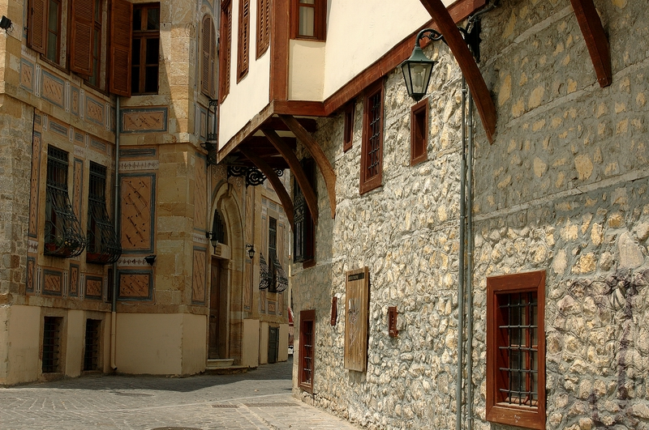

Τοπικη κοινοτητα ξανθης

Η τοπική κοινότητητα της Ξάνθης ιδρύθηκε το 2010 από φοιτητές του τμήματος Ηλεκτρολόγων Μηχανικών και Μηχανικών Υπολογιστών, του Δημοκρίτειου Πανεπιστημίου Θράκης. Τότε η κοινότητα αποτελούταν από μόνο ένα μέλος. Τα επόμενα δύο χρόνια υπήρξε πολύ μικρή ανάπτυξη, με αποτέλεσμα στα τέλη του 2012 να αποτελείται μόνο από 5 μέλη. Όμως με την επιμονή και τις προσπάθειες τους, στις αρχές του 2013 παρουσιάστηκε μια ραγδαία αύξηση εγγραφών και τώρα ο Observer Xanthi απαριθμεί 30 ενεργά μέλη και περίπου 85 εγγεγραμμένα. Υπεύθυνος της κοινότητάς μας είναι ο κ. Γεώργιος Κυριακού, καθηγητής του Τμήματος Τηλεπικοινωνιών και Διαστημικής.
Με τις δυνατότητες που προσφέρει μια μεγάλη ομάδα, το πρώτο τοπικό training πραγματοποιήθηκε τον Μάιο του 2013 με trainers από την training team της τοπικής κοινότητας LC Αθήνας, που μας καθοδήγησαν και μας έδειξαν πώς μπορούμε να οργανώσουμε την πρώτη μας εκδήλωση. Ξεκινήσαμε αμέσως να προετοιμάζουμε το πρώτο μας workshop, Rock the Bit, με πολύ ενέργεια και θέληση για να οργανώσουμε μία καταπληκτική εκδήλωση! Μετά απο τις συμμετοχές των μελών μας σε αντίστοιχες εκδηλώσεις σε όλη την Ευρώπη, μάθαμε απο τα καλύτερα LC πώς πρέπει να είναι ένα event και είμαστε έτοιμοι να εφαρμόσουμε τις γνώσεις μας ως ένα μεγάλο ευχαριστώ στους συμμετέχοντες μας για την υποστήριξη! Το πνεύμα της eestec είναι πολύ έντονο μεσά στην ομάδα μας και γι αυτό σας εγγυώμαστε ότι το πρώτο, και σίγουρα όχι τελευταίο event, θα σας μείνει αξέχαστο!
Πρόσφατα, στις 13 Οκτωβρίου 2013, η τοπική κοινότητα Ξάνθης προάχθηκε σε Junior LC!
ΠΡΟΕΔΡΕΙΟ
Πρόεδρος:
Χρήστος Πέτρου
chripetr2@gmail.com
Αντιπρόεδρος:
Μαρία Κουνέλη
maria.kuneli@gmail.com
Υπεύθυνος Επικοινωνίας:
Παναγιώτης Αρδαγγέλου
panosard93@gmail.com
Ταμείας:
Κυριάκος Μπακιρλής
kyriakos93@gmail.com
Υπεύθυνος Δημοσίων Σχέσεων:
Νίκος Αναστασίου
nikoanas4@gmail.com
Τμημα Ηλεκτρολογων Μηχανικων
& Μηχανικων Υπολογιστων

Το τμήμα Ηλεκτρολόγων Μηχανικών και Μηχανικών Υπολογιστών (ΗΜΜΥ) είναι μέρος του Δημοκριτείου Πανεπιστημίου Θράκης (ΔΠΘ), το οποίο περιλαμβάνει συνολικά 18 τμήματα με έδρες σε Ξάνθη, Κομοτηνή, Αλεξανδρούπολη και Ορεστιάδα. Το τμήμα ιδρύθηκε το 1975 στην Ξάνθη ως τμήμα Ηλεκτρολόγων Μηχανικών και αποτελούσε το δεύτερο τμήμα της Πολυτεχνικής Σχολής του Πανεπιστημίου. Έπειτα μετονομάστηκε σε τμήμα Ηλεκτρολόγων Μηχανικών και Μηχανικών Υπολογιστών για να καλύψει τις ανερχόμενες ανάγκες λόγω της ανάπτυξης της επιστήμης των υπολογιστών. Σήμερα, το προσωπικό του τμήματος αποτελείται από περισσότερα από 45 μέλη ΔΕΠ και ένα μεγάλο αριθμό ερευνητικού και διοικητικού προσωπικού.
Το τμήμα αποτελείται από πέντε τομείς, τον τομέα Ενεργειακών Συστημάτων, τον τομέα Ηλεκτρονικής και Τεχνολογίας Συστημάτων Πληροφορικής, τον τομέα Τηλεπικοινωνιών και Διαστημικής, τον τομέα Φυσικής και Εφαρμοσμένων Μαθηματικών και τoν τομέας Λογισμικού και Ανάπτυξης Εφαρμογών. Οι πανεπιστημιακές εγκαταστάσεις στεγάζονταν αρχικά μέσα στην πόλη της Ξάνθης. Παρόλα αυτά, από το 2008 ξεκίνησε η μετεγκατάσταση του Τμήματος στα νέα κτίρια στην Πανεπιστημιούπολη Ξάνθης στην περιοχή των Κιμμερίων, κοντά στις φοιτητικές εστίες. Το υψηλό επίπεδο εκπαίδευσης που προσφέρει και οι πολλές επιλογές στην ακαδημαϊκή εξέλιξη το κατατάσσουν στις πρώτες επιλογές των μελλοντικών φοιτητών.
Μπορείτε να μάθετε περισσότερα για το τμήμα εδώ.
ΞΑΝΘΗ

Η Ξάνθη, πρωτεύουσα του ομώνυμου νομού, βρίσκεται στην περιοχή της Θράκης στην Βόρεια Ελλάδα, το σταυροδρόμι της Μαύρης Θάλασσας και του Αιγαίου, της Ευρώπης και της Ασίας. Εκει τα νερα του ποταμού Κόσυνθου ξεχύνονται στη πεδιάδα μετά απο ένα ταξίδι πολλών χιλιομέτρων στα βουνά της οροσειράς Ροδόπης, περιβαλλόμενα απο τρία μοναστήρια, τη Παναγία Καλάμους, τη Πανγία Αρχαγγελιώτισσα και τους Ταξιάρχες, όπως επίσης απο τα απομεινάρια της Βυζαντινής πόλης Ξανθείας. Με περίοου 65000 κατοίκους, η Ξάνθη είναι το εμπορικό και πνευματικό κέντρο της περιοχής και από τα χαρακτηριστικά της είναι η πολυπολιτισμικότητα και η αρμονική συνύπαρξη Χριστιανών και Μουσουλμάνων.
Η πολιτιστική ζωή της πόλης είναι πολύ έντονη. Το Καρναβάλι της Ξάνθης, διάσημο σε όλη την Ελλάδα, oι Γιορτές Παλιάς Πόλης, μοναδικές στο είδος και διάσημες για την πολυμορφία τους και το Φεστιβάλ Μάνου Χατζιδάκι είναι ανυπέρβλητα πολιτιστικά γεγονότα που αναβαθμίζουν τα πολιτιστικά χαρακτηριστικά της πόλης. Χωρισμένη στην Παλια Πόλη, ενα μαγικό και γαλήνιο μέρος, και στο σύγχρονο κομμάτι της πόλης, η Ξάνθθη δικαίως χαρακτηρίζεται ως "η πόλη με τα χίλια χρώματα" και με δύο πρόσωπα, το παλιό και το σύγχρονο, καθένα από τα οποία έχει τα δικά του μοναδικά χαρακτηριστικά.
Μπορείτε να μάθετε περισσότερα για την Ξάνθη εδώ.